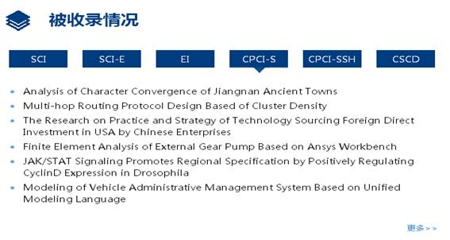

用户使用手册
（试行）
图书馆
目 录
1.1系统界面
1.2 最近收录
1.3 学者推荐
1.4 院系导航
1.5 成果分布
1.6被收录情况
2 教师学者
2.1 按院系单位浏览
2.2 学者详细页面
3.6浏览功能说明
4.2 结果过滤
1 系统简介
武昌首义学院机构知识库（简称WSYUIR）作为支撑学术研究的基础设施，旨在提高学术资源的可见度和展示度，促进学术资源的共享和利用。该库收集并保存我的大学教师和科研人员的学术与智力成果；为我的大学教师，科研人员和学生的学术研究和学术交流提供系列服务, 包括存档，管理，发布，检索和开放共享。
1.1系统界面
该系统界面提供教师学者、分类导航、使用指南、全库检索版块的内容，首页面同时提供检索框、最近收录、学者推荐、院系导航、成果分类、被收录情况等栏目信息。首页检索框提供一站式检索，了解我校机构知识库收录的全部信息。见图1.1-1
图1.1-1
1.2最近收录
该界面提供按出版日期排序的最新10条收录信息。见图1.2-1.
图1.2-1
1.3 学者推荐
随机显示九位知识库中的学者。主页上显示这些作者的姓名、所属院系专业，点击进入后显示与该作者相关的信息和成果列表。
见图1.3-1。
图1.3-1
1.4院系导航
在主页上显示了机构知识库中7个院系、2个课部和校直属、附属单位数量，点击可以查看各单位成果详细信息。见图1.4-1。
见图1.4-1
1.5成果分类
该界面显示教师著作、学位论文、期刊论文、会议论文等分别被点击次数最多的10条成果。见图1.5-1。
图1.5-1
点击蓝色模块可以对应进入每类成果，选择进入每个成果可查看每项成果的作者、关键词、发表日期、出版者等信息，还可以通过百度学术、中国知网、超星等原文查看。见图1.5-2。
图1.5-2
1.6被收录情况
在主页上显示我校机构知识库相关知识成果被SCI、SCI-E、EI、CPCI-S、CPCI-SSH、CSCD收录信息。间图1.6-1。选择进入每个成果可查看每项成果的作者、关键词、发表日期、出版者等信息，还可以通过百度学术、中国知网、超星等原文查看。

图1.6-1
2教师学者
要浏览相关院系的学者信息，点击“按院系单位”按钮，展开各院系信息，院系单位名称灰黑色表示该院系单位未有提供学者信息，点击院系名称将会展示系统中该院系单位的所有学者信息，见图2.1-1 和 图2.1-2。
图2.1-1
学者信息页面，显示各学者的头像、姓名、被浏览次数等信息；点击学者头像或姓名，将会进入单个学者的详细信息页面。见图2.1-2。
图2.1-2
学者详细信息页面展示学者单位、个人主页、合作者、机构知识库中与学者相关的所有成果信息等。见图2.2-1
图2.2-1
3 分类导航
首页检索框下的五个蓝色按钮是系统提供的五种基本浏览功能，该功能允许用户以特定的方式浏览条目的列表，见图3-1。
图3-1
3.1 按院系单位浏览
用户可以按字母顺序浏览所有院系单位。按院系单位浏览，显示WSYUIR的全部院系单位以及各院系单位下所包含的学术成果类型。同时，还显示各院系单位的条目总数及其所隶属的每种学术成果类型的条目数。见图3.1-1。
图3.1-1
3.2 按发表日期浏览
用户可以按照机构知识库中所有条目发表日期的时间先后进行浏览。系统默认是按照发表日期的升序方式来排序，用户也可选择按照标题/提交日期/出版日期的升序方式来排序。
默认状态下，每页显示20个条目，用户也可自行选择其它多种所显示条目数量。此外，用户还可选择特定的出版时间（包括年份和月份），以此快速“搜寻”某一时间段内出版的条目。见图3.2-1。
图3.2-1
3.3 按作者浏览
用户可以按照机构知识库中所有条目的作者姓名的字母顺序进行浏览。系统默认是按照作者姓名的升序方式来排序，用户可自行选择按照作者的降序方式来排序。
默认状态下，每页显示20个条目，用户也可自行选择其它多种所显示条目数量。见图3.3-1。
图3.3-1
3.4 按题名浏览
用户可以按照机构知识库中所有条目题名的字母顺序进行浏览。系统默认是按照题名的升序方式来排序，用户可自行选择按照提交日期/出版日期/题名的降序方式来排序。
默认状态下，每页显示20个条目，用户也可自行选择其它多种所显示条目数量。
用户也可“输入前几位字符”来快速搜寻某些特定题名的条目。见图3.4-1。
图3.4-1
3.5 按关键词浏览
用户可以按照机构知识库中所有条目的主题的字母顺序进行浏览。系统默认是按照主题的升序方式来排序，用户可自行选择按照主题的降序方式来排序。
默认状态下，每页显示20个条目，用户也可自行选择其它多种所显示条目数量。
用户也可“输入前几位字符”来快速搜寻某一特定主题的条目。见图3.5-1。
图3.5-1
3.6浏览功能说明
排序方式：按院系单位、标题、作者、关键词、发表日期等方式浏览，都是按照先数字、再英文、最后是中文的方式，数字按照0-9的顺序来排序，英文按照字母顺序A-Z来排序，中文的排在Z之后且中文按照相应浏览方式的第一个汉字的音序来排序。若想快速定位到某个中文条目，建议以搜索的方式来查找，即通过“输入前几位字符”，快速、准确地进行检索结果定位。
4 全库检索功能
系统支持多种检索功能，可以检索机构知识库中的全部数据，并获取全文。
4.1 检索框
要检索机构知识库的所有内容，可以使用首页中间和右上方的检索框，见图4.1-1。
图4.1-1
说明： 检索词间若有空格将默认使用AND连接各关键词，如检索题名= Politics Profit，则检索结果为题名中既含Politics又含Profit两个关键词的所有条目（与各关键词在题名中所处的位置无关）
4.2 结果过滤
点击首页右上角“全库检索”按钮，进入检索页面。该二级页面右侧是“显示高级检索”，它将机构知识库的全部数据，按“标题”、“作者”、“关键词”、“文献类型”、“发表日期”、“收录数据库”、和“语种”等进行了分类，并在每一类别下面的子类后显示该子类所含条目的个数，见图4.2-1。
图4.2-1
4.3 检索结果
点击“全库检索”按钮，页面中“检索结果”默认显示的是最新提交的20条条目，见图4.3-1。
图4.3-1
在检索框中输入某一关键词（以输入“武昌首义学院”为例）进行检索，得到的检索结果显示在页面“检索结果”下方，每页显示20条条目，“结果过滤”，按检索结果进行自动更新。见图4.3-2。
图4.3-2
5.1 登录
1）当用户访问一个要求系统授权的区域时，系统会要求用户进行登录。点击首页的“请登录”-》“我的空间”按钮。见图5.1-1。
图5.1-1
2）在“登录我的大学机构知识库系统”页面，按照提示使用“我的图书馆”账号登录，输入校园卡/图书证号以及相应的密码，之后点击登录，见图5.1-2。
图5.1-2
3）登录成功后，即进入“我的空间”。首次登录，教师（教工）用户默认邮箱为人事工号+@wsyu.edu.cn；见图5.1-3。
图5.1-3
5.2 “我的空间”相关操作
1）“我的空间”，相关操作如下：点击“登录/我的空间”，可以“提交新的作品”、“查看已发布的提交作品”、“查看我的学术成果”。见图5.2-1。
图5.2-1
2）在“我的空间”首页，用户点击 “未完成的提交作品”下面的“编辑”按钮，即可对未完成提交的作品进行继续编辑，见图5.2-2。
图5.2-2
3）在“我的空间”首页，用户点击“查看已发布的提交作品”，即可对已发布作品进行查看，见图5.2-3。
图5.2-3
4）在“我的空间”首页，用户点击“查看我的学术成果”，即可以查看个人学术成果信息。见图5.2-4

6 上传（提交）功能
6.1 提交作品
提交功能使用户能够向机构知识库中添加新的成果作品。提交过程包括：选择想要提交的类型、描述将要提交的作品（填写相关的元数据）并上传该作品。
提交流程如下：
1) 用户登录后，在“我的主页”点击“新的提交作业”，见图6.1-1。
图6.1-1
2) 在提交页面，可以选择多种提交方式，建议选择院系单位后选择手动提交，进入下一步。见图6.1-2。
图6.1-2
3) 在“描述”界面，填写关于所提交作品的必要信息，对作品进行元数据描述。对于题名、作者、关键词等项，可通过点击旁边的“继续添加”进行添加，也可进行删除。填写完成之后点击“下一步”，见图6.1-5。
图6.1-5
4) 在“访问”页面，可以设置不允许检索、对外开放的禁锢期，或者添加访问策略，建议使用缺省键值直接跳过该步骤进入下一步。见图6.1-6。
图6.1-6
5) 在“上传”页面，点击“浏览或拖拽”按钮，选择并上传文件。下面的“文件描述”是帮助使用者了解文件的相关信息，例如“著作”、“会议信息”等，填写之后点击“下一步”，如知识成果资料没有数字化文档，直接点击“下一步”见图6.1-7。
图6.1-7
6）在“文件上传成功”页面：点选条目名称，将会在新窗口中下载条目，用户可以在新窗口查阅文件内容；点击描述“变更”按钮，可以重新进行“文件描述”；点击文件格式“变更”按钮，可以重新选择文件格式（如果列表中没有合适的文件格式，请描述该文件格式，您只需要新建一个文件的名称，并添加一个版本号，点击“发送”即可；点击“移除”按钮，跳回“上传文件”页面，可以重新进行上传。完成之后，点击“下一步”。见图6.1-8。
图6.1-8

图6.1-9
提示：对已经上传成功的文件，可以移除、修改、增加新文件。
7）检查填写的成果信息、提交的文件、设置的访问策略是否正确。见图6.1-10。
图6.1-10
8）签署《武昌首义学院机构知识库授权协议书》。若同意，则点击“我同意上述协议条款”，完成作品的最终提交。在“作品提交成功”页面，可以“回到我的空间”，也可以选择“继续提交该类型作品”。见图6.1-11和6.1-12。
图6.1-11
图6.1-12